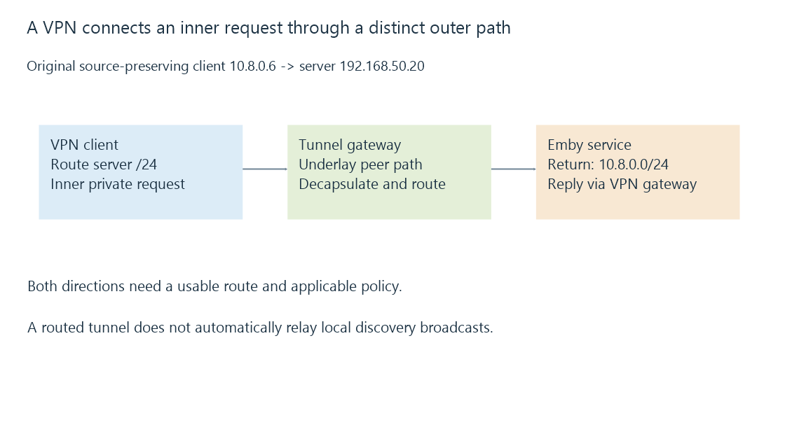

VPN access and the routed path to a media server
VPN access adds a tunnel path into a network, while destination routes, return routes, name resolution and service policy determine whether a media server is usable through it.
A VPN can provide a path from an outside device into the server’s network. “Tunnel connected” establishes that tunnel’s connection state, not that every desired private service is now reachable.
The application’s request still has a destination, route and return path.
The inner destination differs from the tunnel peer
Use an original example with a VPN client address 10.8.0.6 and Emby service address 192.168.50.20.
The inner request targets the private server. The outer tunnel traffic targets the VPN gateway through whatever underlay path its protocol uses.

The tunnel can protect its carried traffic according to its protocol and policy. Authentication to that tunnel is still different from authorization to use the Emby server.
RFC 4301 describes one IPsec policy/tunnel architecture. Other VPN technologies implement their own details.
Both directions need a route
This original reduced routed model preserves the VPN client’s source address:
{
"clientAddress": "10.8.0.6",
"serverAddress": "192.168.50.20",
"clientRoutes": [{"prefix": "192.168.50.0/24", "path": "vpn"}],
"serverReturnRoutes": [{"prefix": "10.8.0.0/24", "path": "vpn-gateway"}]
}
The client’s request can enter the tunnel because the server destination matches its route. The server’s reply can reach the VPN client because another route identifies that client realm.
If the server instead sends replies to a gateway that lacks the relevant return path, the initial request can arrive while the connection still fails.
A gateway can translate the VPN client source as another design. That changes what Emby observes and which return association it uses; it is not the same source-preserving model.
Names need the appropriate resolution path
A private hostname can require a resolver available inside the VPN. A public hostname can resolve to a public endpoint even when the private tunnel path exists.
The actual resolved address determines which destination route applies. “DNS works” needs its returned address and view retained, especially with split DNS.
The tunnel has a packet-size budget
For an original arithmetic exercise, let the underlay allow a 1280-byte packet and let the chosen tunnel add eighty bytes.
The declared inner packet budget is then 1200 bytes. This is a teaching overhead assumption, not an IPsec or product measurement.
Media delivery can stall when larger packets cannot traverse the effective path and the required size discovery/recovery fails. A successful small request does not measure that larger-packet behavior.
Routed access does not extend every broadcast
A permitted unicast route to 192.168.50.20 can work without carrying Emby’s local discovery broadcast.
A layer-two extension or an explicit discovery relay is another capability, with its own scope. It should not be inferred from ordinary routed VPN connectivity.
See Also
- VPN routing, overlapping prefixes and split tunneling
- Subnets, CIDR and matching routes
- Firewalls, traffic rules and connection state
- Emby server discovery and advertised endpoints